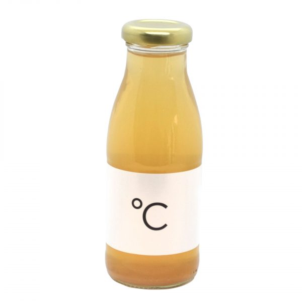

THE BEST MOMENT
OF YOUR DAY
Coffee roasters and espressobar
Cafecito
We are coffee roasters and espressobar Cafecito. Not just any espressobar. We love craftsmanship and finesse. When you do something do it mindfully. Do it with passion and appreciation. That is our belief.
We are here for the conscious bon vivants. People who pursue their dreams and greatly appreciate a moment of relaxation and appreciation of the small refined things.
Passion makes you enjoy. Enjoy sophistication and make everything with appreciation. Then life will taste much better. Welcome to the coffee roasters and espressobar Cafecito.
Bestsellers
Cafecito apple juice
€3,00
VISIT OUR
BEAUTIFUL STORES
Our stores can be found in Amsterdam and Rotterdam. Visit our store in the Van Baerlestraat, Beethovenstraat , Nassaukade or Meent and our baristas will prepare you a delicious artisan coffee.
C A F E C I T O
THE BEST MOMENT OF YOUR DAY
Coffee roasters and espressobar Cafecito stands for passion for craft and the use of natural and sustainable materials. As an espressobar, we believe that by going back to basics, we can serve coffee as it should be. As it was once intended.
C A F E C I T O